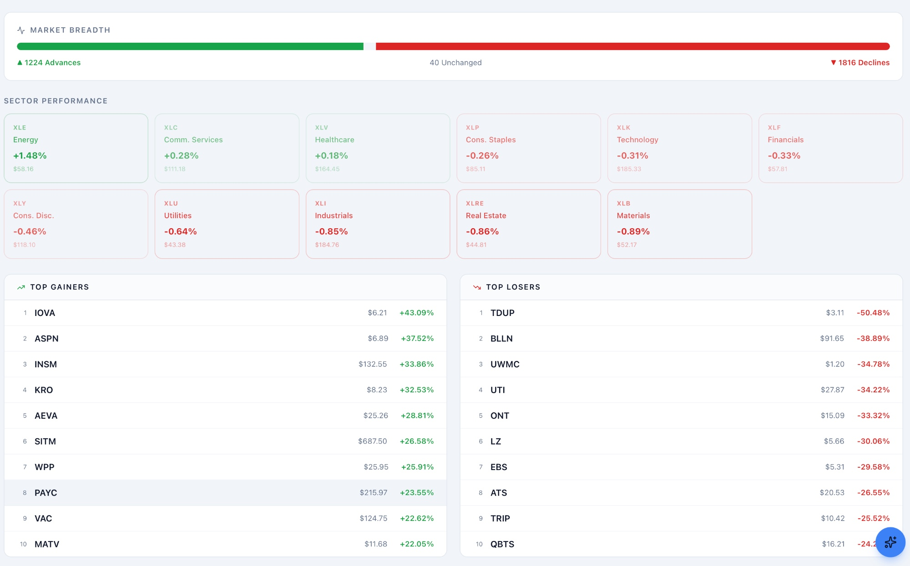

MarketCap
Problem. Following markets in real time usually means stitching together several separate tools — one for quotes, another for charts, another for portfolio math.
Built. A real-time stock-intelligence platform: a live market dashboard (indices, gainers/losers, news), sector performance views, interactive candlestick charts with multi-ticker comparison, a portfolio tracker with P&L, and an income estimator that projects investment growth with dividend reinvestment.
Outcome. 9 users to date.
Visit marketcap.ksystems.live